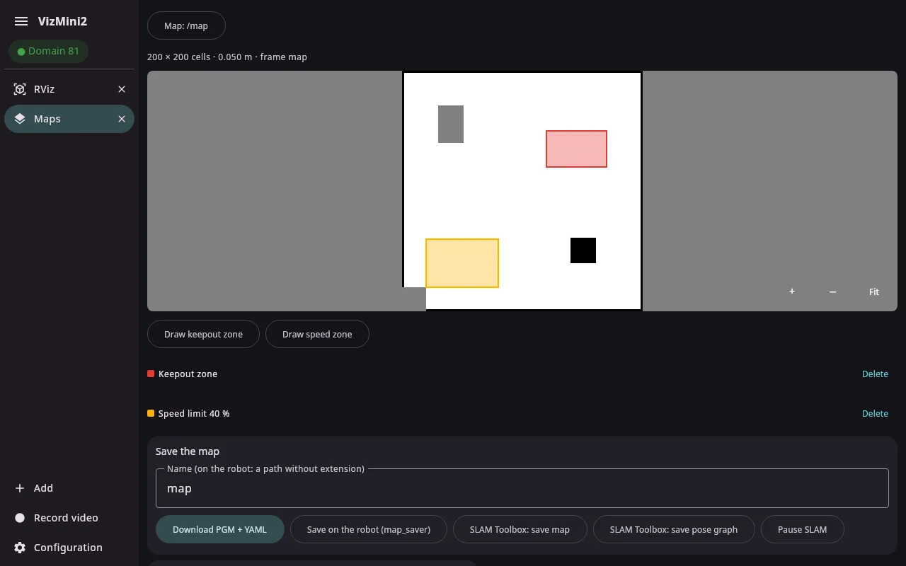

Save maps and draw Nav2 zones
Goal: save the map a robot has built, clear stuck costmaps, and draw keepout and speed limit zones for Nav2 on the map, without editing images by hand.

You need a robot (or a simulation) with Nav2 or SLAM Toolbox publishing a map, for example
Nav2’s own simulation from nav2_bringup.
Saving the map
Add a Maps tab with +. It shows
/map; Map chooses anotherOccupancyGrid. Zoom with pinch (the wheel on the PC) or the + / − buttons; Fit shows it all.Under Save the map, type a name. Download PGM + YAML saves it on the phone (with the share sheet) or the PC (a file dialog), in the format
map_serverloads.To save it on the robot instead, Save on the robot (map_saver) calls Nav2’s map saver; the name is then a path on the robot without extension. With SLAM Toolbox there are also SLAM Toolbox: save map, save pose graph (to continue mapping later) and Pause SLAM.
Clearing costmaps
When the robot keeps avoiding obstacles that are gone, Costmaps → Clear the global or local costmap, or Clear all.
Keepout and speed zones
Tap Draw keepout zone and tap the corners of the area on the map (Undo corner if you miss one), then Finish zone. For a slow area, Draw speed zone and choose the limit in percent of the maximum speed.
Under Zones for Nav2, Publish: the zones go out as costmap filter masks (
/keepout_filter_mask,/speed_filter_mask), latched, with the filter info if you tick it. Download mask saves them as PGM + YAML to serve withmap_serverinstead.Nav2 uses them once its costmap has the KeepoutFilter or SpeedFilter plugin reading that filter info topic (see Nav2’s guide Navigating with Keepout Zones). Send a goal across the zone (Send Nav2 goals) and the robot goes around it, or slows down.
The zones are saved with the tab. More in Maps.